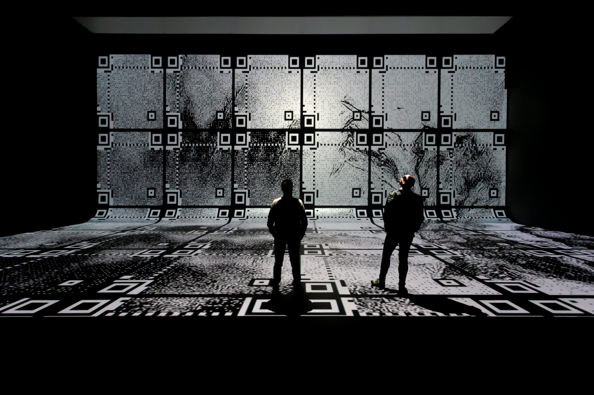
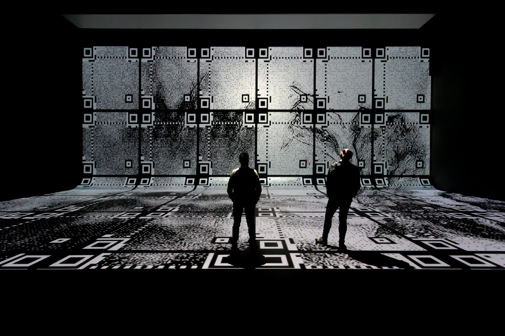

Het eerste museum in Nederland dat zich volledig richt op mediakunst. Ontdek grootschalige, digitale kunstinstallaties die je blik verruimen en de zintuigen op scherp stellen. De kunst van morgen, vandaag.

Het eerste museum in Nederland dat zich volledig richt op mediakunst. Ontdek grootschalige, digitale kunstinstallaties die je blik verruimen en de zintuigen op scherp stellen. De kunst van morgen, vandaag.

 

Information:
Nxt Museum, gevestigd in Noord-Amsterdam, is het eerste museum in Nederland dat zich richt op nieuwe
mediakunst.
Met de focus op kunst die moderne tools gebruikt om de moderne tijd te belichamen,
gelooft het museum dat artistieke expressie de tijd waarin we leven weerspiegelt.
De ruimte is specifiek ontworpen om dynamische en ongebonden nieuwe mediakunst te verkennen,
waardoor beweging wordt gegenereerd op fysiek, mentaal of emotioneel niveau.
Nxt Museum dient als een platform waar creatieven hun visies tot leven brengen,
met als doel nieuwe iteraties van creatieve expressie te faciliteren en de eindeloze mogelijkheden van de
toekomst te verkennen.

tripadvisor:
"Uitstekend en innovatief.
Twee kleindochters van 11 en 8 jaar waren geboeid en enorm geamuseerd.
Volwassenen moeten hun best doen om betrokken te raken en daarbij enige remmingen te verliezen.
Zal niet voor iedereen geschikt zijn, als je alleen geïnteresseerd bent in 'traditionele'
kunst, is er elders genoeg te vinden. Een beetje duur voor een gezin,
misschien goedkopere kaartjes voor scholkinderen? We bleven 2 uur,
wat onze gebruikelijke maximale tijd is. Goed gedaan allemaal."
google reviews:
"Een prachtige tentoonstelling met nieuwe media. Geschikt voor alle leeftijden.
Wij gingen met een groep leerlingen van de bovenbouw middelbare school. Aandacht wordt vastgehouden.
Veel interactie tussen de kijker en de kunst dmv lampen en beweging.
Indrukwekkende projecties en interessante onderwerpen. Zeer aan te raden!
(tijdsduur: Als je snel loopt ben je er in een half uur doorheen. Als je alles in je opneemt kan je er een
uur over doen)."